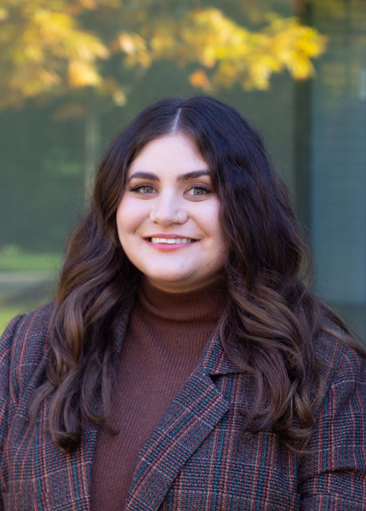

Mary Anne
Panoyan
Ph.D. Candidate at the University of Toronto studying how genetic variation, lifestyle, cardiometabolic health, and brain health intersect.
Explore my research
Welcome
About Me
I am a Ph.D. Candidate in Evolutionary (Molecular) Anthropology at the University of Toronto, with a Collaborative Specialization in Global Health, based at the Krembil Centre for Neuroinformatics at CAMH. Broadly, my research uses genetic and statistical approaches to investigate relationships between cardiometabolic traits, lifestyle behaviours, and brain health. I use quantitative and computational methods to investigate complex relationships relevant to human health and disease.
Outside the lab and classroom, I enjoy art, reading, travel, and spending time outdoors.
This site shares my academic work, teaching experience, and the interests that shape me both inside and outside of research.
Research
Genetic epidemiology, tandem repeats, GWAS, Mendelian randomization, Genomic SEM, and brain health.
↗Teaching
Teaching biological anthropology, human variation, genetics, and forensic science with an emphasis on inclusive learning.
↗Personal
A small window into the things I enjoy beyond academia: art, books, outdoors, travel, and more.
↗“You can never be overdressed or overeducated.”
— Oscar WildeA personal philosophy of approaching scholarship and life with curiosity, confidence, and individuality. To keep learning, stay open to new ideas, and never lose the freedom to express myself.